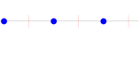
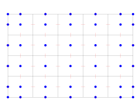

CSRC Report on MOLE Library
Introduction
Physical phenomena are typically modeled as a set of differential equations subject to conservation laws. Numerical methods used to solve these equations are of vital importance in the paradigm of computational science. In this document, we talk about MOLE, an open-source library that implements mimetic discretization methods (MDM) to intuitively solve partial differential equations (PDE).
Mimetic operators are derived by constructing discrete analogs of the continuum differential operators \(\nabla, \nabla \cdot, \nabla \times\), and \(\nabla^2\). Since most continuum models are described in terms of these operators, the MDM approach has recently gained space in the context of numerical PDEs.
Qualities of a mimetic operator:
It is a discrete analog of the continuum operator
It satisfies identities from vector calculus
It satisfies global and local conservation laws
It provides uniform order of accuracy
It is easy to use (and reusable)
In 2003, Castillo and Grone came up with a matrix analysis approach to construct high-order approximations of divergence and gradient operators [5]. However, in their approach, the \(4^{th}\)-order operators have three free-parameters. The mimetic operators implemented in MOLE are based on the work of [6] which are a substantial improvement of the operators introduced in [5]. These new operators have no free-parameters, have optimal bandwidth, are more accurate, and in the worst case they deliver the same accuracy as the ones from 2003.
There are many applications of MDM solving continuum problems, including in the geosciences (porous media) [1, 11]; fluid dynamics (Navier-Stokes) [2, 3]; image processing [9]; general relativity [8]; and electromagnetism [10].
On the Mathematics
MDM not only provide uniform order of accuracy (all the way to the boundary), but they also satisfy fundamental identities from vector calculus,
Gradient of a constant \(G \, f = 0\)
Free stream preservation \(D \, v = 0\)
Curl of the gradient \(C \, G \, f = 0\)
Divergence of the curl \(D \, C \, v = 0\)
Divergence of the gradient \(D \, G \, f = L \, f\)
In addition, the discrete version of the extended Gauss’ divergence theorem is also satisfied with high-order accuracy:
The deduction of equation (1) can be found in [4].
When using MDM we are not discretizing the equations (as it is done with standard finite-difference methods (FDM)), but instead we construct a discrete analog to the differential operator,
Staggered Grids
Mimetic operators are defined over staggered grids.
In 1D:

Staggered grid representation in 1D showing scalar and vector field locations
Scalar fields live in blue circles and vector fields in vertical red segments.
In 2D:

Staggered grid representation in 2D showing scalar and vector field component locations
Scalar fields are defined at blue circles, and horizontal and vertical vector field components are defined at horizontal and vertical red segments, respectively.
In 3D:
The continuum domain is a parallelepiped. Scalar fields are defined at cell centers and at the cell middle edges that are part of the edges of the parallelepiped. Vector fields for the horizontal, vertical, and in depth vector field components are defined at the cell face centers that are perpendicular to the horizontal, vertical and in depth directions, respectively.
There are several ways to generate uniform structured staggered grids (in MATLAB/Octave). What is important is to remember that we need to store the coordinates for two different quantities.
Suppose
This grid holds the coordinates of all scalar quantities (cell center + boundaries). Vector quantities are just:
The previous commands create a couple of one-dimensional arrays with the coordinates of each field (scalar and vectorial). Now, we need a couple of arrays to hold the actual values of these fields.
NOTE: Depending on the problem, you may need or not to explicitly create such arrays. It is often a good practice to preallocate the memory for better performance:
and
Using the Operators
Inside the “examples/matlab” folder you will find several MATLAB/Octave scripts that use MOLE to solve well known partial differential equations.
Our selection includes steady-state and time-dependent problems:
Burger’s equation
Richards’ equation (highly nonlinear, mixed form)
Wave equation (with symplectic schemes)
Heat equation (explicitly and implicitly)
Etc.
Each script in the “examples/matlab” folder is adequately commented.
You may notice that all programs have the same taxonomy:
Definition of variables and initialization (initial and boundary conditions). Grid generation and obtainment of Mimetic Operators.
Apply operators. Solve system of equations (if applicable). Time integration (if applicable). Update fields.
Plot or process results. Check for conservation of energy, mass, etc. (optional).
References
Aarnes, J., Krogstad, S., and Lie, K-A, Multiscale mixed/mimetic methods on corner-point grids. Computational Geoscience. 2008.
2. Abba, A., and Bonaventura, L., A mimetic finite-difference method for large eddy simulation of incompressible flow. Technical Report. Politecnico di Milano, Milano, Italy, August 2010.
3. Barbosa, E., and Daube, O., A finite-difference method for 3D incompressible flows in cylindrical coordinates. Computational Fluids. 2005.
4. Castillo, J.E., and Miranda, G.F., Mimetic Discretization Methods, CRC Press, Boca Raton, Florida, USA, 2013.
5. Castillo, J.E., and Grone, R.D., A matrix analysis approach to higher-order approximations for divergence and gradients satisfying a global conservative law, SIAM J. Matrix Anal. Appl., Vol. 25, No. 1, pp. 128-142, 2003.
6. Corbino, J., and Castillo, J.E., High-order mimetic difference operators satisfying the extended Gauss divergence theorem, Journal of Computational and Applied Mathematics, 364 (2020).
7. Corbino, J., Dumett, M.A, and Castillo, J.E., MOLE: Mimetic Operators Library Enhanced: The Open-Source Library for Solving Partial Differential Equations using Mimetic Methods, 2024. JOSS.
8. Di Bartolo, C., Gambini, R., and Pullin, J., Consistent and mimetic discretizations in general relativity. Journal of mathematical physics. 2005.
9. Haber, E., and Modersitzki, J., A multilevel method for image registration. SIAM journal on scientific computing. 2006.
10. Hyman, J.M., and Shashkov, M., Mimetic discretizations for Maxwell’s equations and equations of magnetic diffusion. Fourth International Conference on Mathematical and Numerical Aspects of Wave Propagation, Golden, Colorado. SIAM. 1998.
11. Hyman, J.M., Morel, J., Shashkov, M., and Steinberg, S., Mimetic finite-difference methods for diffusion equations. Computational Geoscience. 2002.